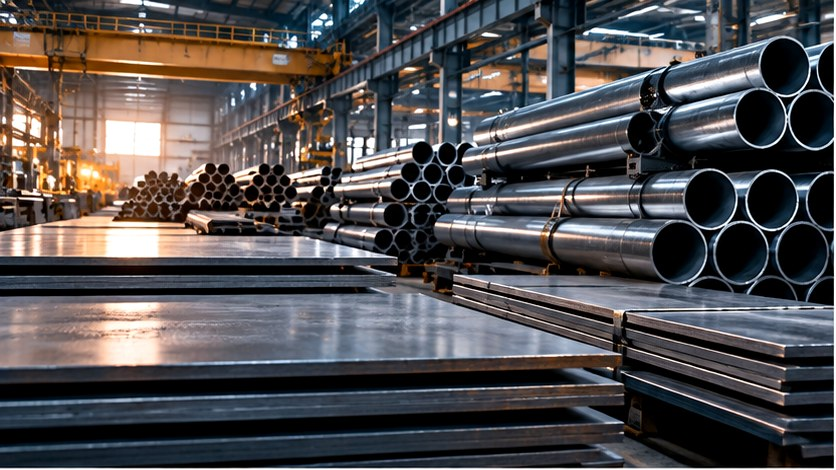

Pressure Vessel Plate
ASTM/ASME alloy and carbon steel plate for pressure vessels, boilers, reactors and process equipment.
SA/A 387 · SA/A 516 · Project gradesProject-driven sourcing of plate, tube, pipe and specialty steel from qualified Asian supply sources.

ASTM/ASME alloy and carbon steel plate for pressure vessels, boilers, reactors and process equipment.
SA/A 387 · SA/A 516 · Project gradesSeamless heat-resistant and alloy tubes for boilers, heat exchangers and high-temperature service.
SA/A 213 · T-series · Project gradesSeamless and welded piping for energy, petrochemical and industrial project applications.
A335 · A312 · A789 / A790Requirement-driven sourcing for non-standard grades, dimensions, certification and project documentation.
ASTM · ASME · EN · Project specificationsWe compare manufacturer proposals against the buyer's material requisition, dimensional requirements, testing, MTC and commercial conditions.
SEND MATERIAL RFQ ↗